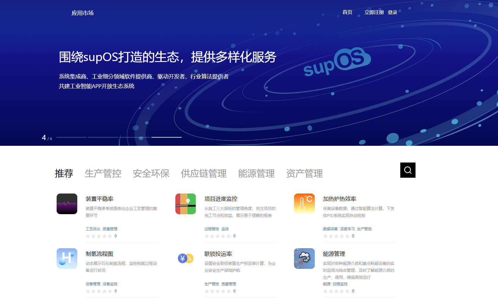
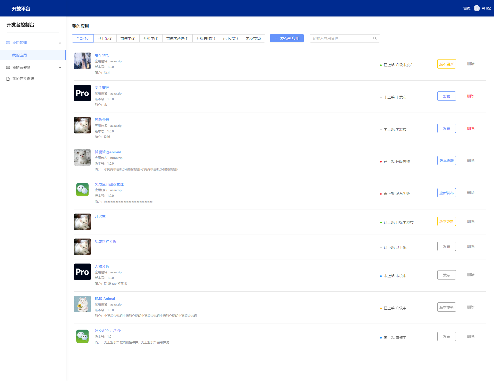
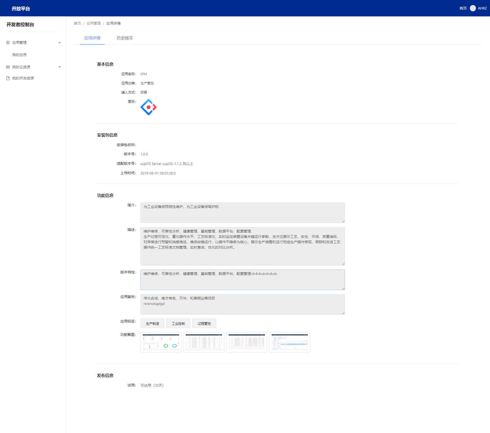
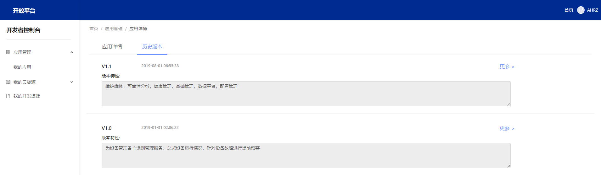
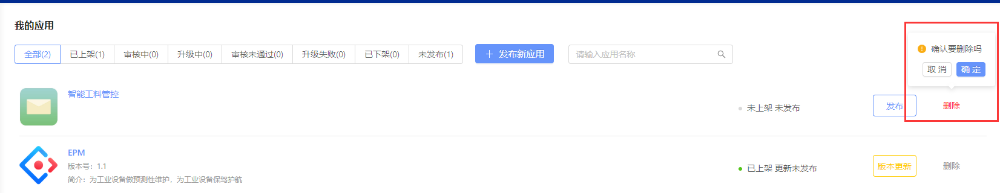
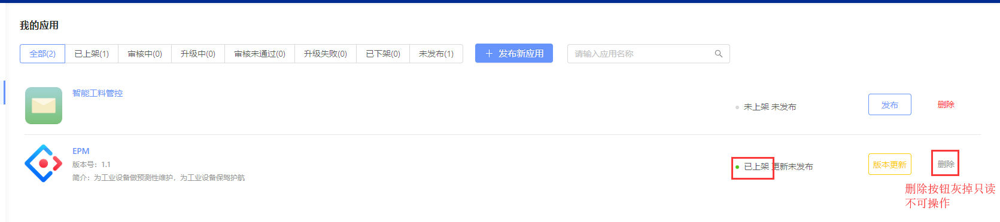

应用发布新手指引
应用发布新手指引
1. 应用接入流程总览¶
工业APPs接入开放平台，简而言之需进行以下4个步骤：
开发者注册认证 → 创建应用 → 提交审核 → 应用上架
详见：应用接入规范
1.1 开发者注册认证
详见：如何注册认证开发者
1.2 提交APPs上架
基本上架流程如下：
创建应用基本信息 -> 上传安装包 -> 完善应用功能信息 -> 设置发布信息 -> 提交申请发布审核 -> 应用上架
详见：如何提交APPs上架
APPs接入开放平台，即可通过在应用商店上架获取丰厚的收益和巨大的流量。
2. 应用上架应用商店需遵守什么规范？¶
为确保接入开放平台应用的质量、提高后续运营服务的稳定性，上线前，请开发者按照接入规范对应用进行仔细检查及测试，对于不符合规范项进行修改。
具体规则详见：应用发布上架规则
3. 应用上架应用商店后的表现形式如何?¶
购买者用户可根据应用分类或搜索应用名称、应用标签以及应用简介信息，快速找到并选购应用。

4. 如何在开发者控制台查看应用状态并管理您发布的应用？¶
开发者控制台为应用日常运营提供一站式服务，包括： （1）服务所有开发者； （2）服务于应用全生命周期； （3）具备足够的帮助指引，可以由开发者自助使用。
4.1 查看应用状态
登录 open.supos.net ，进入开发者控制台页面，即可在菜单[应用管理-我的应用]中查看应用详细信息。
4.1.1 进入菜单后，即可看到所有应用信息、应用状态、以及对应的操作权限等信息。

4.2 管理您的应用
点击行记录右侧的“编辑”等操作按钮即可分别进入不同状态的查看与编辑等操作，应用记录首次发布以及后期版本升级需保存并提交审核通过后方可生效。 点击应用名称可进入该应用信息详情页，可看到应用完善的何止信息和应用版本记录信息等。


5. 应用提交后被审核驳回？¶
应用审核具体的驳回原因请点击应用的“驳回原因”进行查看，并根据驳回原因提示进行后续操作。 例如：若应用涉嫌赌博、政治敏感、色情、山寨、侵权等原因则可能被审核驳回，对于涉嫌山寨、侵权的应用需要开发者提供国家版权局颁发的软件著作权、应用的授权代理书上传到开发者后台证明，再重新提交审核。
6. 发布应用如何删除？¶
6.1 针对未提交审核的应用，平台提供了删除应用的功能。

6.2 已提交审核的应用不支持删除（包含审核中、审核通过、已上架、已下架的应用等）。
